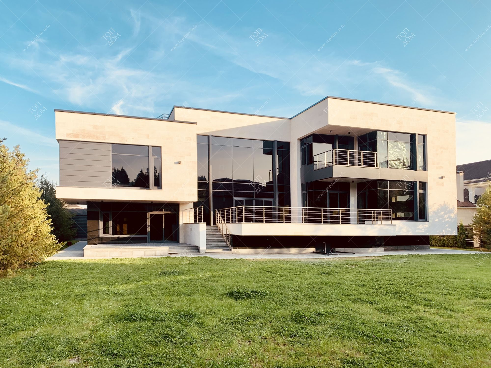

Работа в "Скандинавском стиле"
- Скандинавские дома являются современными во всех отношениях, потому что при проектировании большое внимание уделяется эргономичности, энергосбережению, экологической чистоте.
- Несмотря на кажущуюся на первый взгляд простоту фасада, дома в скандинавском стиле скрывают целый спектр новейших методик рационального использования площади и технологий энергосбережения
- Скандинавские дома хорошо вписываются в природный ландшафт, они буквально становятся частью окружающей природы. Часто можно встретить конструкции, отделанные снаружи нестроганными досками, которые кроме эстетической, выполняют еще и функцию дополнительной защиты фасада от ветра и осадков. Для строительства скандинавских домов используют природные материалы – натуральное дерево
3000000 руб.

Работа в стиле "Хай-тек"
- Архитектурный стиль представляет собой гармоничное сочетание внешнего оформления постройки, выбранных отделочных материалов и предметов декорирования интерьера.
- Идея состоит в демонстрации техники, установленной в доме, подбора остальных элементов отделки под её стиль и цветовое решение. Высокие технологии: система «умный дом», встроенная бытовая техника, обилие подсветки, – центральный элемент интерьера, который только дополняется мебелью и текстилем.
- Приоритет домов – функциональность, поэтому нередко постройки получаются асимметричными, с обилием выступающих элементов. Крыша может быть частично остеклена для повышения уровня освещённости (приём известен как «второй свет») или оборудована под террасу. Масштабные функциональные элементы помещений, например, лифты и лестницы, часто располагают снаружи здания. Также помещения нередко представлены отдельными «кубиками», соединёнными между собой.
- Материалами для возведения таких домов выступают металл, бетон и стекло, подчёркивающие «футуристичность» постройки. Интерьерная и строительная мода предполагает использование натуральных материалов во внутренней отделке жилища, поэтому встречаются и деревянные дома Хай-тек, сочетающие традиционный материал и высокие технологии.
60000000 руб.